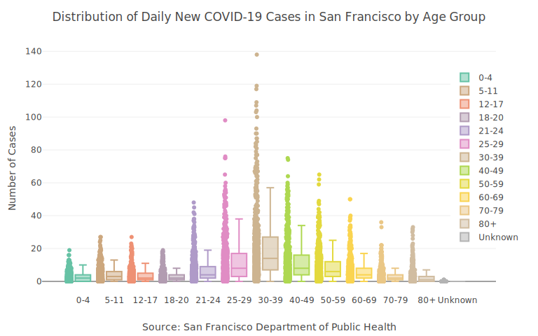
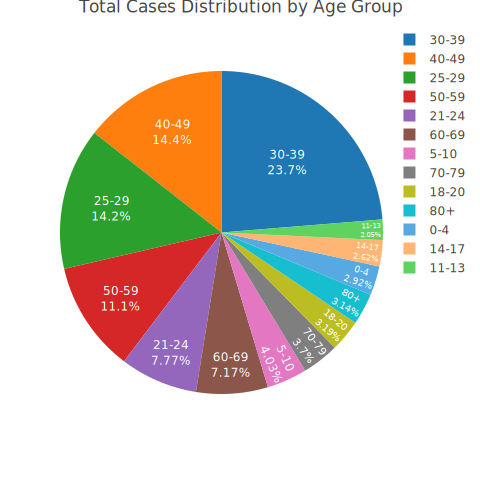
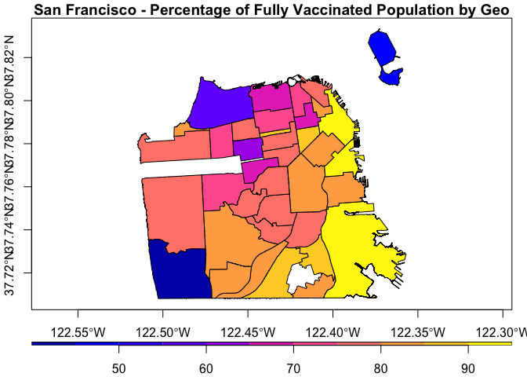
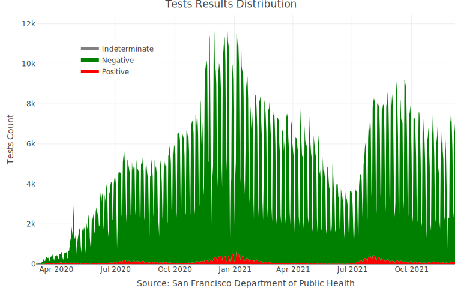
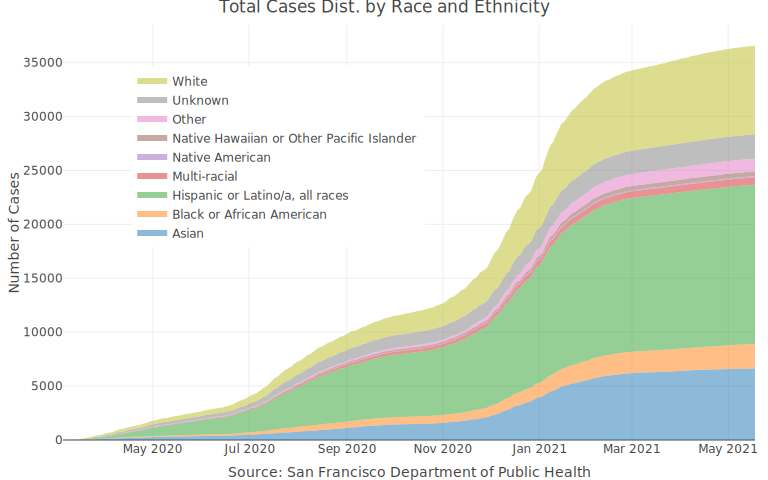

The covid19sf package provides a daily summary of the covid19 cases in San Francisco. The package includes the following datasets:
-
covid19sf_geo- Confirmed cases and deaths summarized by geography -
covid19sf_hospital- Hospital capacity data -
covid19sf_hospitalizations- Hospitalizations data -
covid19sf_housing- Alternative housing sites -
covid19sf_test_loc- Testing locations -
covid19sf_tests- Daily number of tests -
covid19sf_vaccine_demo- Summary of vaccine doses given to San Franciscans by demographics groups (age and race) -
covid19sf_vaccine_demo_ts- Time series view of vaccine doses given to San Franciscans by demographics groups (age and race) -
covid19sf_vaccine_geo- COVID-19 vaccines given to San Franciscans by geography -
covid19sf_population- COVID-19 cases by population characteristics over time
The following dataset were deprecated and replaced by the covid19sf_population dataset:
-
covid19sf_demo- Cases summarized by date, transmission and case disposition -
covid19sf_homeless- Confirmed cases by homelessness -
covid19sf_age- Cases summarized by age group -
covid19sf_gender- Confirmed cases summarized by gender -
covid19sf_summary- Cases summarized by date, transmission and case disposition
Data soucre: San Francisco, Department of Public Health - Population Health Division through the San Francisco Opne Data protal website
Installation
# install.packages("devtools")
devtools::install_github("RamiKrispin/covid19sf")Usage
The ccovid19sf package provides different views for the covid19 cases in San Francisco. That includes case distribution by age, gender, race, etc. The following examples demonstrate some of the data use cases.
Cases distribution by demographic
The covid19sf_population provides a daily summary of new and cumulative positive cases by the following demograpich groups:
- Age group
- Comorbidities
- Gender
- Homelessness
- Race/Ethnicity
- Sexual Orientation
- Single Room Occupancy Tenancy
- Skilled Nursing Facility Occupancy
- Transmission Type
data(covid19sf_population)
head(covid19sf_population)
#> specimen_collection_date characteristic_type characteristic_group
#> 1 2020-03-03 Age Group 0-4
#> 2 2020-03-03 Age Group 5-11
#> 3 2020-03-03 Age Group 12-17
#> 4 2020-03-03 Age Group 18-20
#> 5 2020-03-03 Age Group 21-24
#> 6 2020-03-03 Age Group 25-29
#> characteristic_group_sort_order new_cases cumulative_cases
#> 1 1 NA NA
#> 2 2 NA NA
#> 3 3 NA NA
#> 4 4 NA NA
#> 5 5 NA NA
#> 6 6 NA NA
#> population_estimate
#> 1 39353
#> 2 44153
#> 3 34664
#> 4 20407
#> 5 39944
#> 6 100792Cases distribution by age
To get cases view by age group we will use the characteristic_type variable to filter the data:
library(dplyr)
#>
#> Attaching package: 'dplyr'
#> The following objects are masked from 'package:stats':
#>
#> filter, lag
#> The following objects are masked from 'package:base':
#>
#> intersect, setdiff, setequal, union
df_age <- covid19sf_population %>%
filter(characteristic_type == "Age Group")
head(df_age)
#> specimen_collection_date characteristic_type characteristic_group
#> 1 2020-03-03 Age Group 0-4
#> 2 2020-03-03 Age Group 5-11
#> 3 2020-03-03 Age Group 12-17
#> 4 2020-03-03 Age Group 18-20
#> 5 2020-03-03 Age Group 21-24
#> 6 2020-03-03 Age Group 25-29
#> characteristic_group_sort_order new_cases cumulative_cases
#> 1 1 NA NA
#> 2 2 NA NA
#> 3 3 NA NA
#> 4 4 NA NA
#> 5 5 NA NA
#> 6 6 NA NA
#> population_estimate
#> 1 39353
#> 2 44153
#> 3 34664
#> 4 20407
#> 5 39944
#> 6 100792Ordering the age groups before plotting the cases distribution:
age_order <- df_age %>%
select(characteristic_group, characteristic_group_sort_order) %>%
distinct() %>%
arrange(characteristic_group_sort_order)
df_age$characteristic_group <- factor(df_age$characteristic_group, levels = age_order$characteristic_group)The following box-plot shows the distribution of the positive cases by age group:
library(plotly)
plot_ly(df_age,
color = ~ characteristic_group,
y = ~ new_cases,
boxpoints = "all",
jitter = 0.3,
pointpos = -1.8,
type = "box" ) %>%
layout(title = "Distribution of Daily New COVID-19 Cases in San Francisco by Age Group",
yaxis = list(title = "Number of Cases"),
xaxis = list(title = "Source: San Francisco Department of Public Health"),
legend = list(x = 0.9, y = 0.9),
margin = list(t = 60, b = 60, l = 60, r = 60))
Here is the overall distribution of cases by age group as of 2021-12-11:
df_age %>%
filter(specimen_collection_date == max(specimen_collection_date)) %>%
plot_ly(values = ~ cumulative_cases,
labels = ~ characteristic_group,
type = "pie",
textposition = 'inside',
textinfo = 'label+percent',
insidetextfont = list(color = '#FFFFFF'),
hoverinfo = 'text',
text = ~paste(" Age Group:", characteristic_group, "<br>",
"Total:", cumulative_cases, "<br>",
"Population Estimation:", population_estimate,
paste("(",round(100* cumulative_cases/population_estimate, 1) ,"%)", sep = ""))) %>%
layout(title = ~ paste("Total Cases Dist. by Age Group as of", max(specimen_collection_date)),
margin = list(t = 60, b = 20, l = 30, r = 60))
Geospatial visualiztion
The package provides several geo-spatial dataset:
-
covid19sf_vaccine_geo- COVID-19 vaccines given to San Franciscans by geography -
covid19sf_geo- Confirmed cases and deaths summarized by geography -
covid19sf_test_loc- Testing locations
Those three datasets are sf objects, ready to use. For example, plotting the COVID19 vaccination data by geography:
library(sf)
#> Linking to GEOS 3.8.1, GDAL 3.2.1, PROJ 7.2.1
data(covid19sf_vaccine_geo)
str(covid19sf_vaccine_geo)
#> Classes 'sf' and 'data.frame': 40 obs. of 9 variables:
#> $ id : chr "Bernal Heights" "Financial District/South Beach" "Glen Park" "Haight Ashbury" ...
#> $ area_type : chr "Analysis Neighborhood" "Analysis Neighborhood" "Analysis Neighborhood" "Analysis Neighborhood" ...
#> $ count_vaccinated_by_dph : num 5106 1841 573 823 2401 ...
#> $ count_vaccinated : num 21109 22782 7257 14360 16351 ...
#> $ count_series_completed : num 19781 20215 6804 13279 14930 ...
#> $ acs_population : num 25167 21537 8651 19275 19711 ...
#> $ percent_pop_series_completed: num 0.786 0.939 0.786 0.689 0.757 ...
#> $ last_updated : POSIXct, format: "2021-12-15 04:45:07" "2021-12-15 04:45:09" ...
#> $ geometry :sfc_MULTIPOLYGON of length 40; first list element: List of 1
#> ..$ :List of 1
#> .. ..$ : num [1:195, 1:2] -122 -122 -122 -122 -122 ...
#> ..- attr(*, "class")= chr [1:3] "XY" "MULTIPOLYGON" "sfg"
#> - attr(*, "sf_column")= chr "geometry"
#> - attr(*, "agr")= Factor w/ 3 levels "constant","aggregate",..: NA NA NA NA NA NA NA NA
#> ..- attr(*, "names")= chr [1:8] "id" "area_type" "count_vaccinated_by_dph" "count_vaccinated" ...
df <- covid19sf_vaccine_geo %>% filter(area_type == "Analysis Neighborhood") %>%
dplyr::mutate(perc_complated = percent_pop_series_completed * 100)We will plot the object Using the sf package:
plot(df[, c("perc_complated", "geometry")],
main = "San Francisco - Percentage of Fully Vaccinated Population by Geo",
key.pos = 1, axes = TRUE, key.width = lcm(1.2), key.length = 1.0)
More examples available on this vignette.
Tests results distribution
The covid19sf_tests provides a daily summary of the daily number of tests and their results (positive, negative, and indeterminate):
data(covid19sf_tests)
head(covid19sf_tests)
#> specimen_collection_date tests pos pct neg indeterminate
#> 1 2020-03-01 2 0 0.00000000 2 0
#> 2 2020-03-03 8 2 0.25000000 6 0
#> 3 2020-03-04 12 0 0.00000000 12 0
#> 4 2020-03-06 21 1 0.04761905 20 0
#> 5 2020-03-07 23 7 0.30434783 16 0
#> 6 2020-03-08 12 3 0.25000000 9 0The plot below shows the daily distribution of the results of the tests:
covid19sf_tests %>%
plotly::plot_ly(x = ~ specimen_collection_date,
y = ~ pos,
name = "Positive",
type = 'scatter',
mode = 'none',
stackgroup = 'one',
fillcolor = "red") %>%
plotly::add_trace(y = ~ neg, name = "Negative", fillcolor = "green") %>%
plotly::add_trace(y = ~ indeterminate, name = "Indeterminate", fillcolor = "gray") %>%
plotly::layout(title = "Tests Results Distribution",
yaxis = list(title = "Tests Count"),
xaxis = list(title = "Source: San Francisco Department of Public Health"),
legend = list(x = 0.1, y = 0.9))
Cases distribution by race ethnicity
The covid19sf_population dataset provides a daily summary of the COVID19 positive cases by race and ethnicity:
data(covid19sf_population)
head(covid19sf_population)
#> specimen_collection_date characteristic_type characteristic_group
#> 1 2020-03-03 Age Group 0-4
#> 2 2020-03-03 Age Group 5-11
#> 3 2020-03-03 Age Group 12-17
#> 4 2020-03-03 Age Group 18-20
#> 5 2020-03-03 Age Group 21-24
#> 6 2020-03-03 Age Group 25-29
#> characteristic_group_sort_order new_cases cumulative_cases
#> 1 1 NA NA
#> 2 2 NA NA
#> 3 3 NA NA
#> 4 4 NA NA
#> 5 5 NA NA
#> 6 6 NA NA
#> population_estimate
#> 1 39353
#> 2 44153
#> 3 34664
#> 4 20407
#> 5 39944
#> 6 100792Below is a plot of the cumulative positive cases by race and ethnicity:
covid19sf_population %>%
filter(characteristic_type == "Race/Ethnicity") %>%
dplyr::arrange(specimen_collection_date) %>%
plotly::plot_ly(x = ~ specimen_collection_date,
y = ~ cumulative_cases,
# name = 'Cases',
type = 'scatter',
mode = 'none',
color = ~characteristic_group,
stackgroup = 'one') %>%
layout(title = "Total Cases Dist. by Race and Ethnicity",
legend = list(x = 0.05, y = 0.9),
yaxis = list(title = "Number of Cases", tickformat = ".0f"),
xaxis = list(title = "Source: San Francisco Department of Public Health"))